Abdallah Aneed · aneed.work · November 2026Konzept
CRM-Fachkonzept: Coffee-Bike-Caterer im Franchise-Netz
Fallstudie zur Übung. Standort Bonn, Teil eines Franchise-Netzes, vor allem B2B-Events.
Ausgangslage und Ziel
Anfragen kommen über Website-Formular, E-Mail, Telefon oder WhatsApp und Instagram, etwa 20 pro Monat (Annahme, Spanne 10 bis 30). Etwa 30 Prozent der Kunden buchen erneut (Annahme, Spanne 20 bis 40).
Jede Anfrage wird am selben Tag beantwortet. An einer Stelle landen aber nur Formularanfragen. E-Mail, Telefon, WhatsApp und Instagram werden nicht zentral erfasst. Nachfassen und Wiederbuchung hängen deshalb vom Gedächtnis ab. Das ist das eigentliche Problem. Auf Netzwerkebene fehlen zudem gemeinsame Daten.
Ziele:
Jede Anfrage wird erfasst, egal über welchen Kanal.
Mehr Kunden buchen erneut.
Datenmodell
Account: das buchende Unternehmen.
Kontakt: die Person beim Account, mit Einwilligung.
Lead: die neue Anfrage mit Kanal, Eventdatum und Gästezahl.
Opportunity: die geprüfte Anfrage mit Angebot und Status.
Buchung: der bestätigte Auftrag mit Datum, Leistung und Standort.
Ticket: Feedback oder Beschwerde nach dem Event.
Customer Journey nach dem Event
Tag 1: Feedback-Mail mit NPS-Frage.
NPS 9 bis 10: Bitte um Empfehlung. NPS 7 bis 8: Frage, was gefehlt hat.
NPS 0 bis 6: Ticket und Rückruf innerhalb von zwei Werktagen.
Tag 90: Angebot zur Wiederbuchung, wenn keine neue Buchung und kein offenes Ticket vorliegt.
BSI CDP: Kundendaten aus allen Kanälen, Auswahl für das 90-Tage-Angebot.
BSI Insight: KPIs pro Standort und für das Netz.
BSI AI: nicht in Phase 1, später zum Vorsortieren von Anfragen.
KPIs (Annahme)
KPI
Heute
Ziel
Anfragen zentral erfasst
60 %
100 %
Antwort am selben Tag
100 %
halten
Abschlussquote Lead zu Buchung
40 %
50 %
Wiederbuchungsquote
30 %
40 %
Rücklauf Feedback-Mail
0 %
25 %
NPS
nicht gemessen
50
Übungskonzept. Kein produktives BSI-System. Zahlen sind Annahmen.Seite 1 von 2
Abdallah Aneed · aneed.work · November 2026Anhang
User Stories
Must: Als Inhaber will ich alle Anfragen in einer Liste sehen.
Must: Als Mitarbeiter will ich eine Telefon- oder WhatsApp-Anfrage in einer Minute erfassen.
Must: Als Inhaber will ich nach drei Tagen ohne Antwort eine Nachfass-Aufgabe.
Must: Als Inhaber will ich nach 90 Tagen ein automatisches Wiederbuchungsangebot.
Should: Als Kunde will ich nach dem Event eine kurze Feedback-Mail.
Should: Als Inhaber will ich bei NPS 0 bis 6 sofort ein Ticket.
Could: Als Franchise-Zentrale will ich die KPIs aller Standorte vergleichen.
Won't (vorerst): Als Kunde will ich online selbst buchen.
Systemauswahl
HubSpot: leichtes CRM, schnell eingerichtet. Reicht für einen Einzelbetrieb.
Salesforce, Microsoft Dynamics 365: große Plattformen, Optionen für das Netz. US-Anbieter, schwächer bei der Datensouveränität. Dynamics passt vor allem in Microsoft-Umgebungen.
BSI: europäischer Anbieter mit starker Datensouveränität, stark in regulierten Branchen, Low-Code-Konfiguration, eine Plattform mit eigener Sicht pro Standort.
Für dieses Netz spricht am meisten für BSI. Als Enterprise-Software lohnen sich die Lizenzkosten aber erst über viele Standorte.
Für einen Einzelbetrieb wäre BSI zu groß. Für ein Franchise-Netz mit vielen Standorten passt es.
Integration
Das Formular schickt Anfragen per REST ans CRM, dort entsteht ein Lead. E-Mails werden ins CRM weitergeleitet. Telefon, WhatsApp und Instagram laufen über die Eingabemaske. Buchungen gehen in Teamkalender und Rechnungsprogramm. Jeder Standort sieht seine Daten, die Zentrale die KPIs aller Standorte.

Rollout
Phase 1, Monat 1 bis 2: Pilot Bonn mit CRM-Kern, Formular, Eingabemaske, Nachfassen.
Phase 2, Monat 3 bis 4: Journey nach dem Event, erste KPI-Berichte.
Phase 3, ab Monat 5: weitere Standorte, Sicht für die Zentrale.
Risiken
Das Team erfasst Telefon und WhatsApp nicht. Gegenmaßnahme: Eingabemaske mit fünf Pflichtfeldern.
Mails nach dem Event verletzen den Datenschutz. Gegenmaßnahme: Einwilligung im Formular, Abmeldelink in jeder Mail, vorher rechtlich prüfen lassen.
Standorte pflegen Daten unterschiedlich. Gegenmaßnahme: einheitliche Pflichtfelder und Vorlagen der Zentrale.
Übungskonzept. Kein produktives BSI-System. Zahlen sind Annahmen.Seite 2 von 2